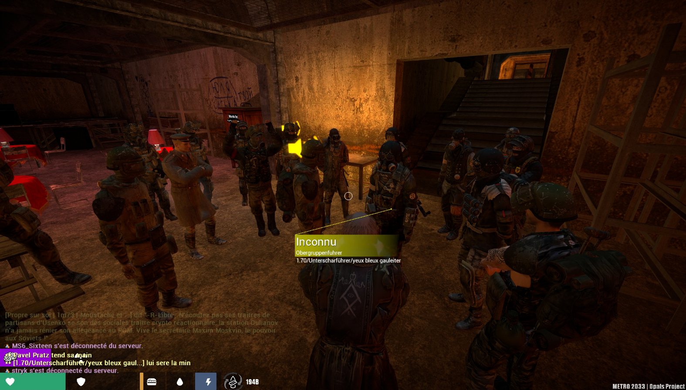
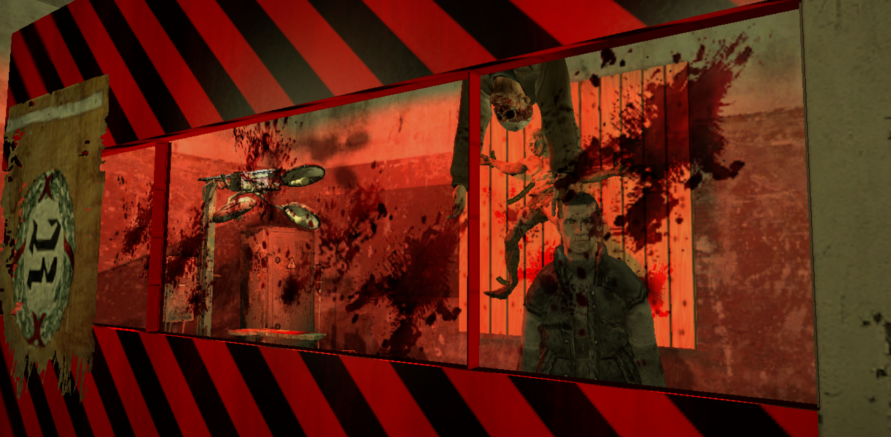
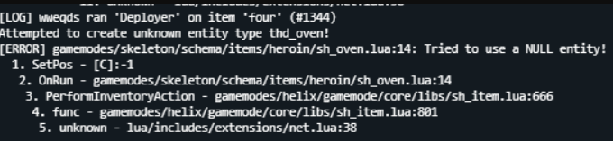
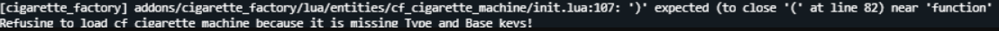

De mon côté, j'ai déjà modifié des "mods" sur le jeu Garry’s Mod afin de créer un serveur et réunir des joueurs pour former une communauté. C'est un projet que j'ai eu depuis 2020 jusqu'en 2024, où j'ai rencontré de nombreux échecs, mais ces échecs m'ont beaucoup appris de mes erreurs et m'ont permis, à la fin, de créer un serveur où il y avait entre 60 et 70 joueurs de 20h à 23h pendant un mois. Malheureusement, mon projet a de nouveau échoué car je n'arrivais pas à gérer les équipes d'administration. J'ai pu apprendre beaucoup de choses dans ce projet, notamment la logique de la programmation et aussi la difficulté du métier de manager. Même si le projet n'a pas eu de succès à long terme, j'ai pris beaucoup de plaisir à le réaliser et à le gérer du début à la fin, tout en offrant du divertissement à de nombreux joueurs.


